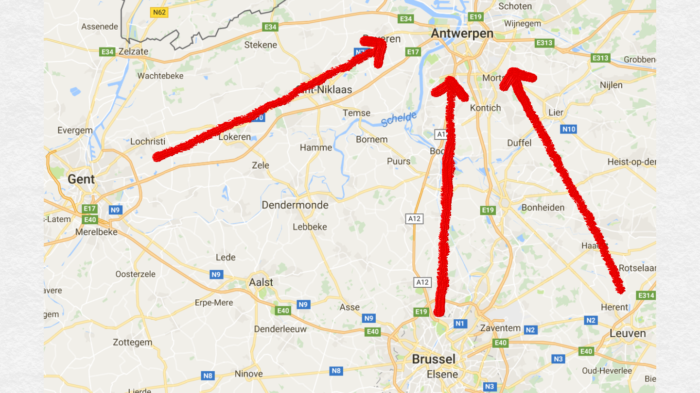
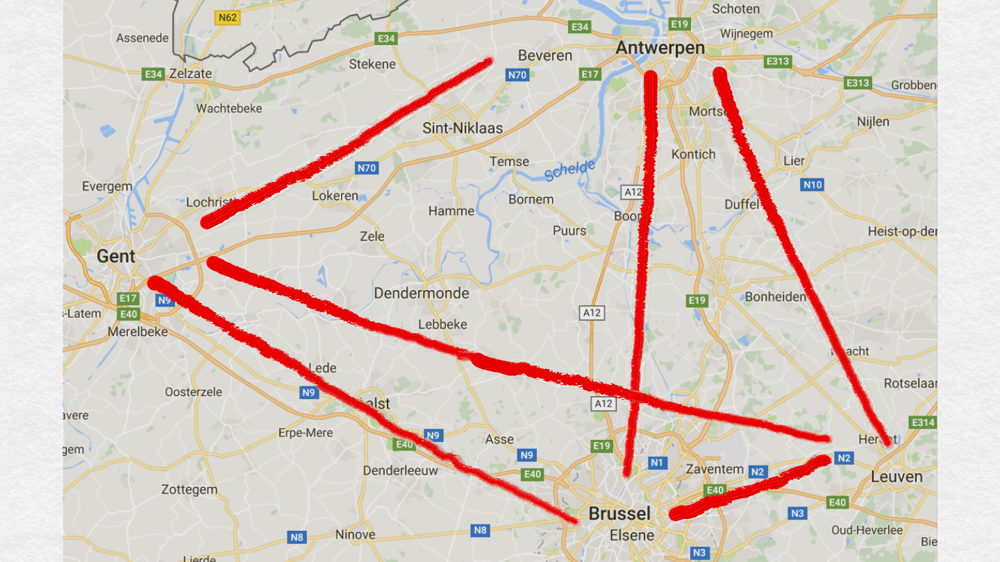

Semi-automatic collation of medieval texts.
The role of the base manuscript
ESTS 2016 / DiXiT 3 - Antwerp, 5-7 October
ESTS 2016 / DiXiT 3 - Antwerp, 5-7 October
Awareness and critical understanding
in using
computational tools
understand the algorithm,
based on the Gothenburg's model
semi-automatic collation softwares,
here Juxta e CollateX
Why?
- choose the most appropriate application
- understand correctly the results
- recognize and make use of the innovative potential
Gothenburg's model
"Interedition" - Gothenburg, 2009
Juxta + CollateX
- Tokenization
- Normalization
- Alignment
- Analysis and feedback
- Visualization
Why do we collate?
- Investige the varia lectio
- Understand the relationships among the witnesses
Manual collation
- Choose base manuscript. E.g.: ms. A
- Compare all witnesses (B, C, D, ...) with A
Why do we choose a base manuscript?
- availability of the witnesses
- time
- difficulty to record, organize and visualize the variants among all the witnesses
practical reasons
Attention!
base manuscript for collation
≠
base manuscript for critical edition
is this the best way to collate
(when the aim of the collation is to understand the relationships among the witnesses)
?
Spencer, Matthew, e Christopher J. Howe. 2004. Collating Texts Using Progressive Multiple Alignment. Computers and the Humanities 38 (3): 253-70.
Distance between the witnesses and the base manuscript
Distance among all the witnesses

Pairwise alignment
Example
A: Dalla collina si vede una grande casa rossa.
B: Dal belvedere si vede una grande casa azzurra.
C: Dalla collina si vede una piccola casa rossa.
D: Dal belvedere si vedono tante case.
Step 1: Pairwise alignment
using 'A' as the base manuscript.
|
Dalla] dal B |
||||||||||||||||||
|
grande] piccola C |
||||||||||||||||||
|
Dalla] dal D |
Step 2: the results of the pairwise alignment are merged
Dalla] dal B, D
collina] belvedere B, D
vede] vedono D
una] tante D
grande] piccola C, om. D
casa] case D
rossa] azzurra B, om. D
Distance between the witnesses and the base manuscript
Distance among all witnesses
Multiple alignment
Progressive multiple alignment
- pairwise alignment
- guide tree
- order of similarity
- alignment following the order of similarity
Drawbacks
- pairwise alignment expensive calculation
- guide tree
- order of similarity NP complete problem
- alignment following the order of similarity
Among the drawbacks
Order of the tokens in the super-witness created by the serialization of the graph

| Dalla | collina | si | vede | una | grande | piccola | casa | rossa |
| A, C | A, C | A, C | A, C | A, C | A | C | A, C | A, C |
| Dalla | collina | si | vede | una | piccola | grande | casa | rossa |
| A, C | A, C | A, C | A, C | A, C | C | A | A, C | A, C |
Non progressive
multiple alignment
Es. PicXAA
|
|

Elena Spadini